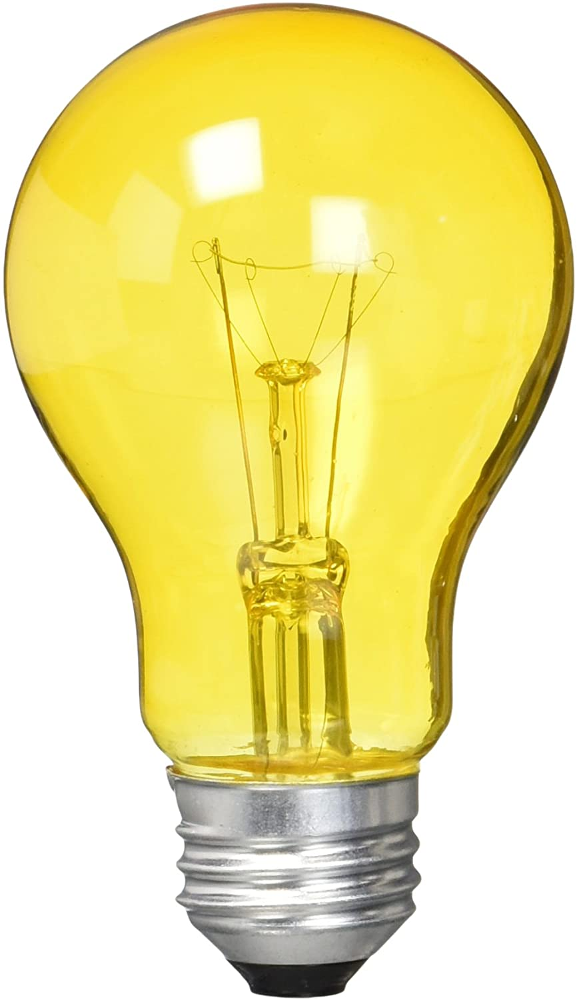

Alyson Ackman (born February 6, 1993)[2] is a professional swimmer competing on the Canadian National Swim Team since 2013. In 2016, she retired from her professional swimming career to pursue a career as a personal trainer and swimming coach. Prior to her retirement, she won a silver medal in the 4 x 200 Freestyle relay and a bronze in the 4 x 100 Freestyle relay at the 2014 Commonwealth Games in Glasgow.[3] At the 2014 FINA Pan Pacific Championships Ackman came 12th in the 200m freestyle, 14th in the 100m freestyle, 18th in the 400m freestyle, 4th in the 4×100 freestyle, and won bronze in the 4 × 200 m freestyle relay.[4] In 2015 Ackman competed at the Pan American Games and the FINA World Championship (Kazan, Russia). During the Pan American Games, she earned a gold medal in the 4 X 100 Freestyle and in the 4 X 200 Freestyle events.
can certainly relate. She was the youngest Canadian swimmer to qualify for the 1980 Moscow Olympics. When they decided to boycott the Games, she missed her opportunity to compete.
